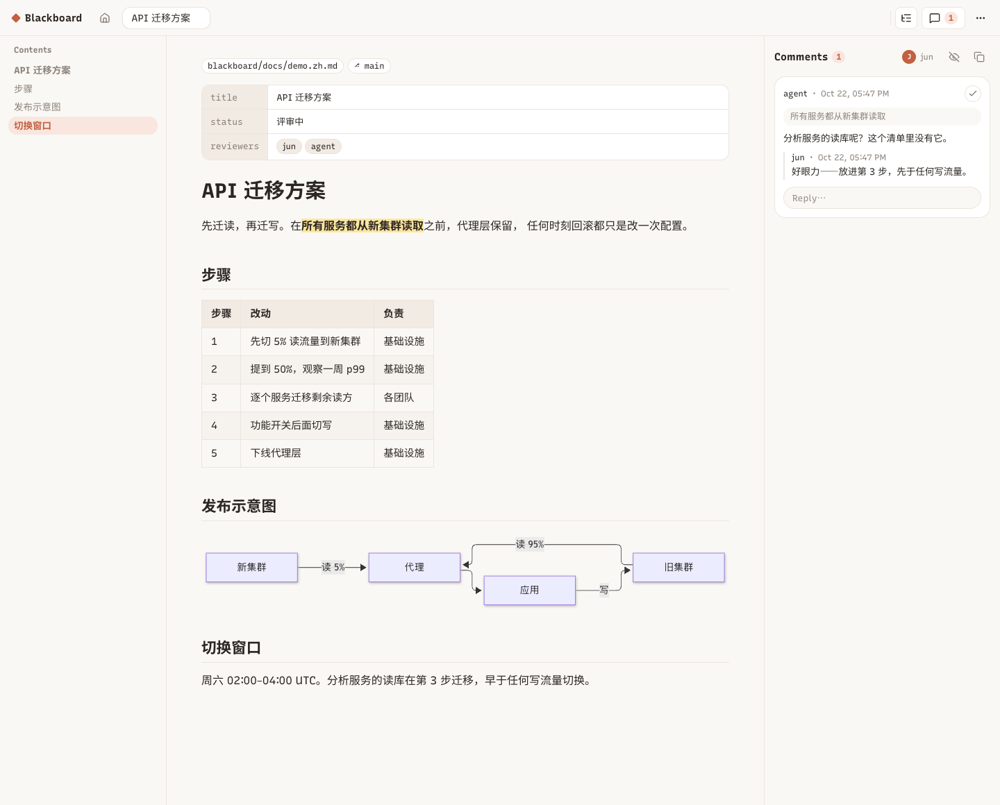
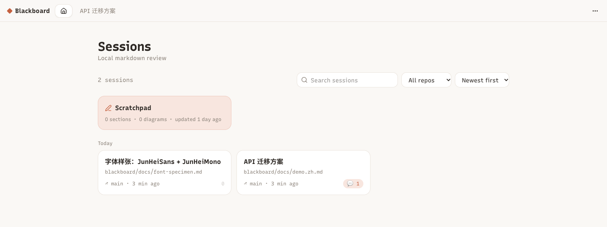

把方案评审，搬回文档里。
划一句，批一句；你的 agent 用同一条 CLI 接话，改到定稿。
npm install -g blackboardblackboard open docs/plan.md也可以用 bun：bunx blackboard open docs/plan.md

文档页：划一段文字、写一句批注；agent 在 shell 里回话，改动实时上屏。

每个会话就是磁盘上的一个 markdown 文件，在哪个仓库、哪条分支一目了然。点高亮定位评论，点评论跳回正文。
blackboard open <file> [--no-browser] # 打印 "<id> <url>" blackboard sessions [--json] # id、标题、位置、分支、未解决评论 blackboard comments <session> [--all] [--json] blackboard reply <session> <comment-id> "text" blackboard resolve <session> <comment-id> # 或者：reopen blackboard comment <session> --quote "passage" "note" blackboard wait <session> [--timeout 30m] # 阻塞等待人的新评论
CLI 直接读写 ~/.blackboard 下的文件，和 web 应用共用一把锁——应用开着关着都能用，开着的页面会实时跟着变。